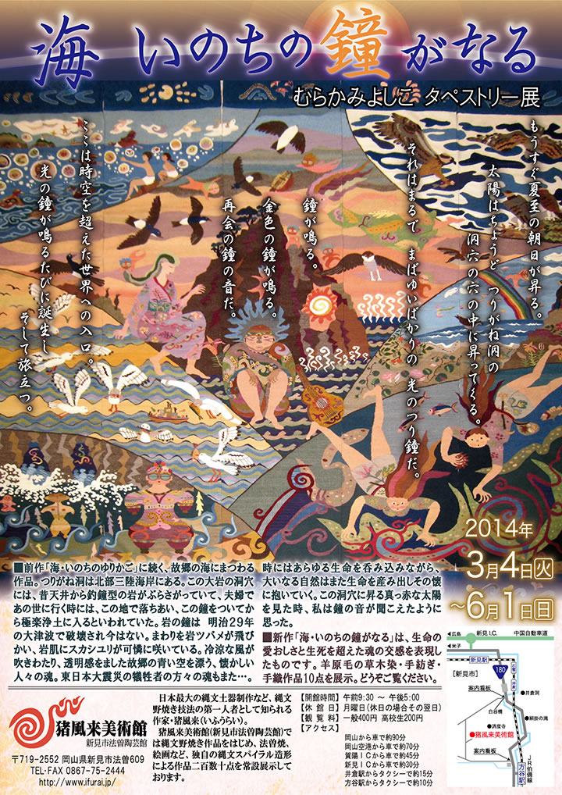

|  |
| 【『海・いのちの鐘がなる』チラシ】 →PDF版を開く |
もうすぐ夏至の朝日が昇る。
太陽はちょうど つりがね洞の
洞穴の穴の中に昇ってくる。
それはまるで まばゆいばかりの 光のつり鐘だ。
鐘が鳴る。
金色の鐘が鳴る。
再会の鐘の音だ。
ここは時空を超えた世界への入口。
光の鐘が鳴るたびに誕生し
そして旅立つ。
=∴=∵=∴=∵=∴=∵=∴=∵=∴=∵=∴=∵=∴=∵=∴=∵=∴=∵=∴=∵=∴=∵=∴=∵=∴=∵=∴=
前作「海・いのちのゆりかご」に続く、故郷の海にまつわる作品。
つりがね洞は北部三陸海岸にある。
ここは日本最古の地層を有する断崖と岩礁が続く海岸。
海岸にある二子貝塚からは、縄文晩期の大きな遮光器土偶が発掘されている。
つりがね洞の所以はこの大岩に大きな洞穴があり、昔はその天井から釣り鐘型の岩がぶらさがっていたことから。
夫婦であの世に行く時には、この地で落ち合い、この鐘をついてから極楽浄土に入るといわれていた。
この釣り鐘は明治２９年の大津波で破壊され、今はない。
釣り鐘は無くなったけれど、毎年夏至の頃つりがね洞の洞穴の穴を通して水平線から昇る太陽をみることが
できる。
まわりには岩ツバメが飛び交い、岩肌に根を張ってスカシユリが可憐に咲いている。
この洞穴に昇る真っ赤な太陽の写真を見た時、私は鐘の音が聞えたように思った。
ここは海の彼方にあるといわれるニライカナイに通じる特別な門にちがいない。
２０１１年３月１１日の東日本大震災の数年前に父と母が相次いで亡くなり、私は何となく故郷とのつながり
が途切れたように感じていた。
そんな時にときおり見る故郷の風景写真の青空に惹きつけられた。
冷涼な風が吹きわたり、透明感を増した青い空を漂う、懐かしい人々の魂。
震災の犠牲者の方々の魂もまた……。
時にはあらゆる生命を呑み込みながら 大いなる自然はまた生命を産み出しその懐に抱いていく。
漂泊する魂たちは、つりがね洞の前でいつかきっと会える日が来る。
作品「海・いのちの鐘がなる」は、生命の愛おしさと 生死を超えた魂の交感を表現したものです。
羊原毛の草木染・手紡ぎ・手織作品１０点を展示。
=∴=∵=∴=∵=∴=∵=∴=∵=∴=∵=∴=∵=∴=∵=∴=∵=∴=∵=∴=∵=∴=∵=∴=∵=∴=∵=∴=
作品： 「海・いのちの鐘がなる」 265×240㎝
「ひかりの鐘」 26×40㎝
「スカシユリ」 26×39㎝
「夏至の朝」 26×40㎝
「海にかかる虹」 26×40㎝
「愛しきいのち」 26×40㎝
「慈しむいのち」 26×39㎝
「鎮魂」 26×40㎝
「ウニ」 26×41㎝
「カモメ」 26×41㎝